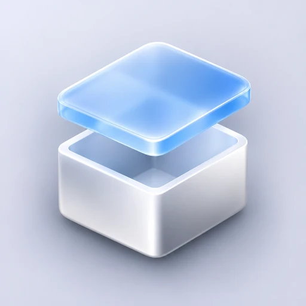
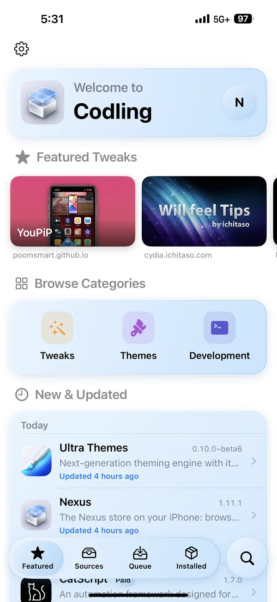
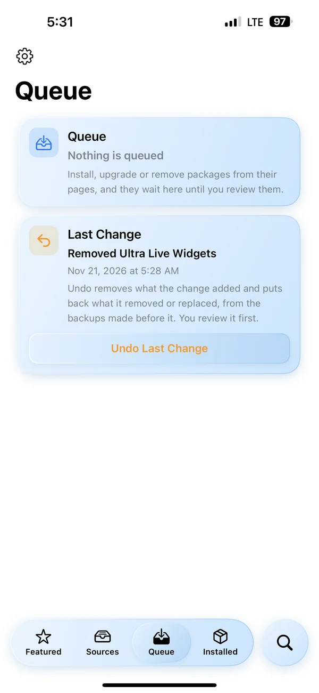
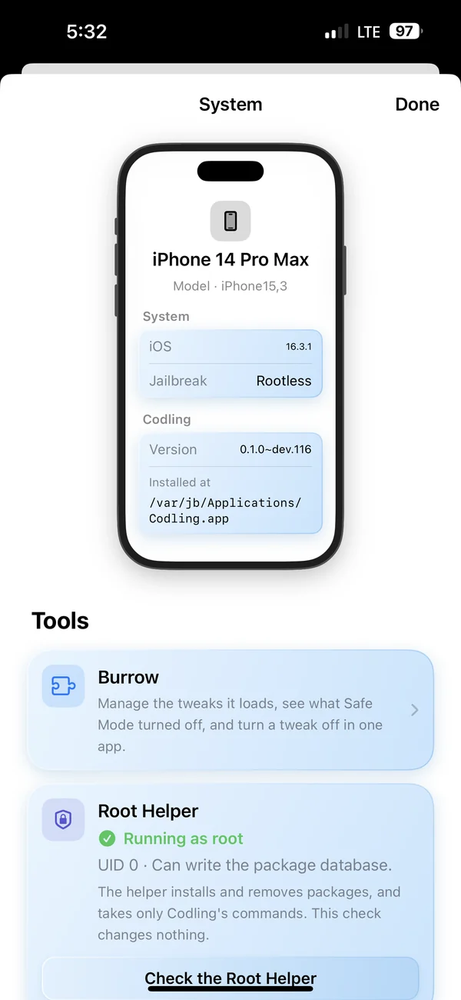
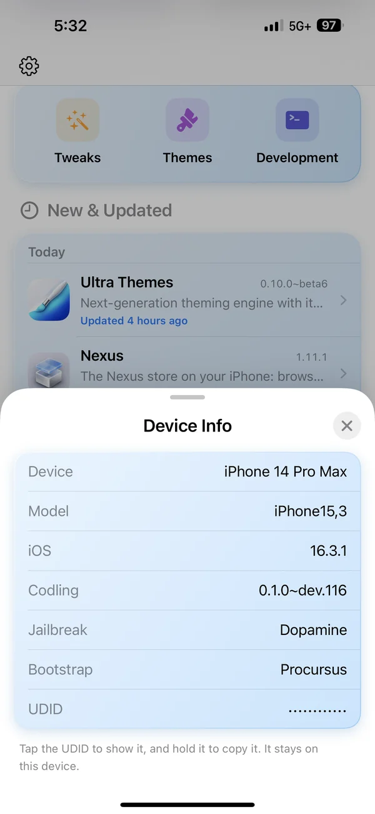

Undo the last change
Before every change, Codling records which packages you have and keeps a copy of each one it removes or replaces. If an install or a removal goes wrong, Undo Last Change shows you what it will put back, and puts it back.
Codling is an open-source package manager for jailbroken iPhones and iPads. It records your packages before every change, so you can undo the last one.
Codling is in early development and isn’t ready for everyday use yet. Version 1.0 will follow a closed and a public beta.





Screenshots from Codling 0.1.0~dev.116 on an iPhone 14 Pro Max.
Before every change, Codling records which packages you have and keeps a copy of each one it removes or replaces. If an install or a removal goes wrong, Undo Last Change shows you what it will put back, and puts it back.
Codling works with Burrow, our open-source tweak injection platform. Once you switch from ElleKit to Burrow’s tweak loader, Safe Mode turns a tweak that crashes an app off in that app only, and Codling shows you which one it was. You can also turn any tweak off in a single app yourself. Burrow runs on rootless jailbreaks for now; moving from ElleKit explains the switch and how to go back.
Codling checks whether a package says it supports your iOS version, and shows you where it says so: in its dependencies, its tags or its name.
Codling checks a source’s signature before it installs anything from it. When a source isn’t signed, you see that first, and you decide.
Sources that published articles describe as handing out paid tweaks without their developers’ permission are marked, with links to the evidence. Codling never blocks or hides them, and it checks the list on your device.
When a change doesn’t finish, Codling explains what happened and offers to finish the job, instead of showing raw apt output.
Codling can check that its root helper is running as root, and that every package is fully installed with its dependencies met. Neither check changes anything.
Sign in to a source’s payment provider, buy packages and install the ones you own. Codling uses the payment provider API that other package managers already support, so paid sources work without extra setup.
The number of waiting updates shows on Codling’s icon and on the Installed tab, and Upgrade All installs them together.
Native depictions are drawn with the system’s own fonts and colors, and web depictions open inside Codling.
Codling is written from scratch in Swift and SwiftUI, on top of apt and dpkg. It follows Light and Dark Mode, grows with the largest text sizes, works with VoiceOver and respects Reduce Motion.
It opens at once on the packages it already knows, and refreshes your sources behind it. On the same iPhone, mobile network and 14 sources, Codling refreshed them in 2.2 seconds on average, where Sileo took 4.0 (how we measured).
| iOS | iOS 15 or later |
|---|---|
| Device | iPhone XS, iPhone XR or later, or an iPad with an Apple A12 chip or newer. Codling doesn’t install on older devices. |
| Rootless | Dopamine, with the iphoneos-arm64 package |
| RootHide | Dopamine (RootHide), with the iphoneos-arm64e package |
Rootful jailbreaks aren’t planned for 1.0. So far Codling has been tested on an iPhone 14 Pro Max with iOS 16.3.1 and Dopamine (rootless). RootHide and other iOS versions are covered by automated tests, and are next to be tried on devices in the closed beta.
What we checked in Codling’s root helper, links, payments and signature checks, what we found, and how each finding was fixed: the review.
What Codling reads from your repository, how it checks it, and what to publish so your packages show and sell well: the guide.
Your tweaks run on Burrow unchanged. Burrow’s own functions report why a hook failed and install batches of hooks all at once or not at all: Burrow for developers.
Codling comes with the Nexus repository as a default source, and you can remove it. Every source is treated the same way: no ads, no tracking and no paid placement.
Codling is open source under the Apache License 2.0. Release packages are built on GitHub Actions and carry build provenance attestations, so you can check that a package was built from the public source:
gh attestation verify com.nexusjb.codling_<version>_iphoneos-arm64.deb --repo Nexus-jb/codlingCodling isn’t available to install yet. It will come with the public beta; until then, you can follow its development on GitHub.